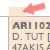
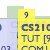
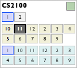

Step 3: Building your timetable
Drag and drop any module on the timetable. All other available timeslot(s) will appear when you start dragging.
If there are too many available slots in the same cell, drop the module on the timeslot's tab.
This is the Module Viewer. The exam date is shown beside the module code. Each button represents a lecture group, tutorial group, or lab session. Clicking on them toggles their status between being displayed, fixed, and hidden.
You can save up to 3 timetables in these slots in the top-right corner. Hover over the buttons to see what they do!